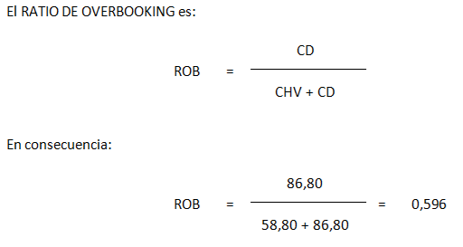
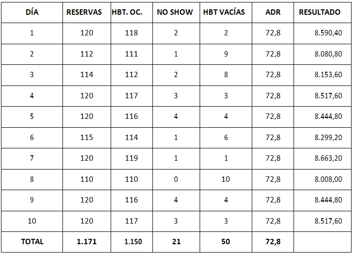
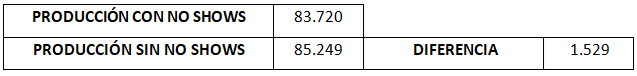
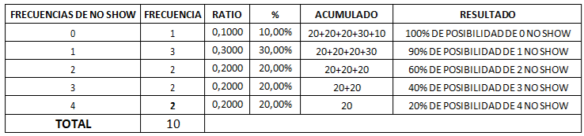

Ya conocemos bien las connotaciones de provocar el overbooking, e incluso las dificultades de resolverlo. Sin embargo, esta es una práctica muy extendida en las estrategias de Revenue, ya que tratamos de incrementar los ingresos, incluso anticipándonos a la existencia de NO SHOW.
Sabemos que ante un momento de overbooking nos enfrentamos a dos grandes decisiones basadas en los costes:
- Cuál es el coste de una habitación vacía.
- Cuál es el coste de desviación de un cliente hacia la competencia.
El coste de una habitación vacía se calcula restando el valor de los costes variables unitarios delADR:
CHV = ADR - CV
El coste de desviación de un cliente a otro establecimiento de la competencia se determina que se trata del ADR, al que se suma ese coste variable:
CD = DR + CV
Analizamos este ejemplo para este hotel, al que incorporamos el datos de coste variable unitario, cuyo importe es de 14 €.
ADR 72,80 €
Nº HABS 120
DIAS ANALIZADOS 10
CV 14,00 €
CHV 58,80 €
CD 86,80 €

Es decir, que el ratio de overbooking es de 59,6 %. Así, su comprensión es difícil, pero vamos a intentar aclarar su sentido. Veamos la situación de los 10 primeros días de un mes en que la ocupación es notable:

Este cuadro indica, para 10 días de un mes, el número de reservas efectivas y las habitaciones realmente ocupadas, debido a la existencia de clientes no show. Económicamente tiene las siguientes consecuencias:
Se observa que la existencia de clientes no show tiene una incidencia económica de 1.529 €, y al calcular el ratio de overbooking se observa que éste es del 59,62 %.
Para dar utilidad al cálculo del ratio debemos efectuar:

En la casilla de RESULTADO se observa la probabilidad de que se produzcan NO SHOWS. Como nuestro RATIO DE OVERBOOKING es de 59,62 %, el valor más próximo (60 % de posibilidad) se debe a 2 NO SHOW, diremos que ese es el valor aceptable. Por tanto, nuestro hotel podrá observar la posibilidad de realizar un overbooking puntual de 2 habitaciones.
No debe olvidarse que esta es una práctica compleja, ya que las posibilidades de ejercer el control sobre el cliente, para determinar de una forma efectiva si éste aparecerá o no, son muy complejas, e incluso se puede decir que imposibles. Por tanto, conviene restar agresividad a esta práctica.
Sin embargo, es importante considerar que se hace necesario un estricto CONTROL DE LOS CANALES. Todas estas reservas pueden haberse realizado a partir de canales como: OTA, WEB, TTOO, CORPORATE, GDS, CRS,…
La realidad nos indica que el 19 % de las reservas online sufren cancelaciones, algunas de ellas muy a última hora, provocando una pérdida de negocio importante.
En la actualidad, debe considerarse como óptimo no llegar a practicar el OVERBOOKING, aunque en ocasiones es inevitable. Nuestro objetivo será aumentar nuestro REVPAR, en definitiva, nuestra rentabilidad. Si vemos el ejemplo anterior observamos que:
COSTE DE LAS HABITACIONES VACÍAS (CHV) 2.940,00
COSTE DE LOS NO SHOWS 1.528,80
COSTE REAL DE HABITACIONES NO VENDIDAS 1.411,20